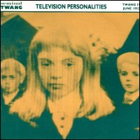

Television Personalities |
 1992 - Seminal Twang - TWANG15/CD - 7"/CD Songs: We Will Be Your Gurus An Exibition By Joan Miro Love Is Better Than War
Performed by:
Produced by Phillip Vinall and a small furry animal "We Will Be Your Gurus" will appear on the forthcoming TVP's double album "Closer To God". The other two tunes won't. Thank you. |